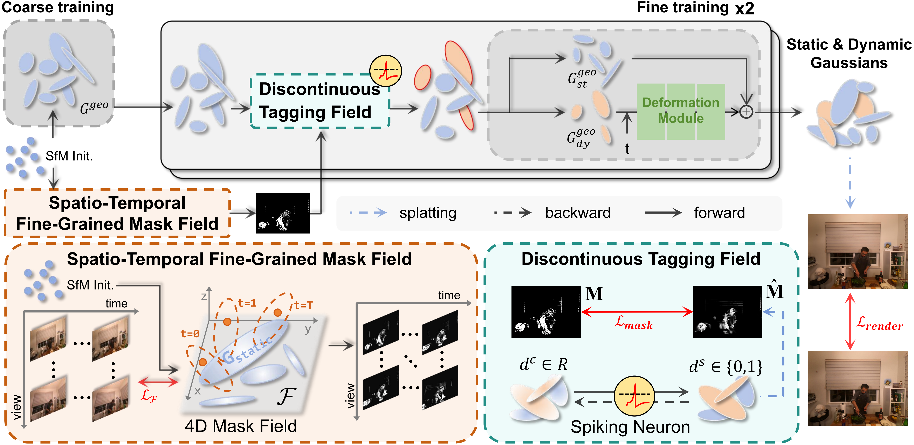

Dynamic-Static Decomposition for Novel View Synthesis of Dynamic Scenes with Spiking Neurons
Abstract

Novel view synthesis for dynamic scenes remains challenging due to complex motion variations. Recent methods represent dynamic and static regions with separate Gaussians to improve efficiency and accuracy, but inaccurate assignment of static and dynamic Gaussian primitive still limits performance. We identify two key issues, namely inaccurate mask priors and improper tag representations, which lead to boundary artifacts, loss of fine-grained motion details, and overfitting on input views, resulting in degraded side-view synthesis. To address these problems, we propose a spatio-temporally fine-grained mask field and a discontinuous dynamic–static tagging field to achieve accurate assignment of dynamic and static Gaussian primitives, enabling high-quality novel view synthesis, especially in fine-grained motions, motion boundary regions, and side viewpoints. Experiments show that our method achieves state-of-the-art rendering quality and real-time performance.

Novel view synthesis results on N3DV dataset.

Novel view synthesis results on VRU dataset.
BibTeX
@article{SpikeMaskGS,
title={Dynamic-Static Decomposition for Novel View Synthesis of Dynamic Scenes with Spiking Neurons},
author={Lingyun Dai and Zehao Chen and Yan Liu and Shi Gu and Peng Lin and De Ma and Huajin Tang and Qian Zheng and Gang Pan},
journal={Proceedings of the IEEE/CVF Conference on Computer Vision and Pattern Recognition (CVPR)},
year={2026}
}